01 · Savage 3D
Diseño y modelado 3D de piezas funcionales
Durante mi experiencia como diseñador 3D trabajé de forma remota a partir de especificaciones proporcionadas directamente por el responsable del proyecto. Desarrollaba los modelos en AutoCAD 3D, entregaba los archivos STL y realizaba modificaciones a partir de la retroalimentación recibida. En total participé en aproximadamente 21 proyectos; aquí se documentan seis modelos representativos.
21+proyectos realizados6modelos documentados
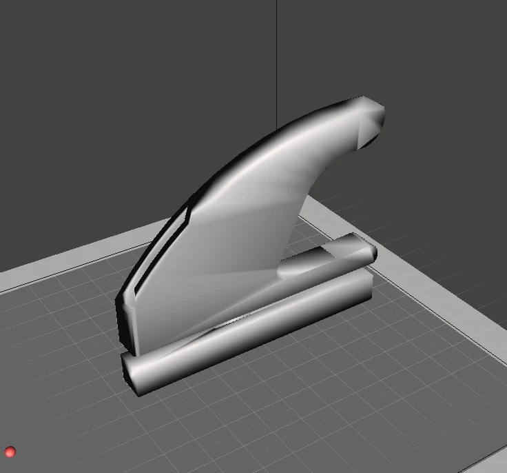
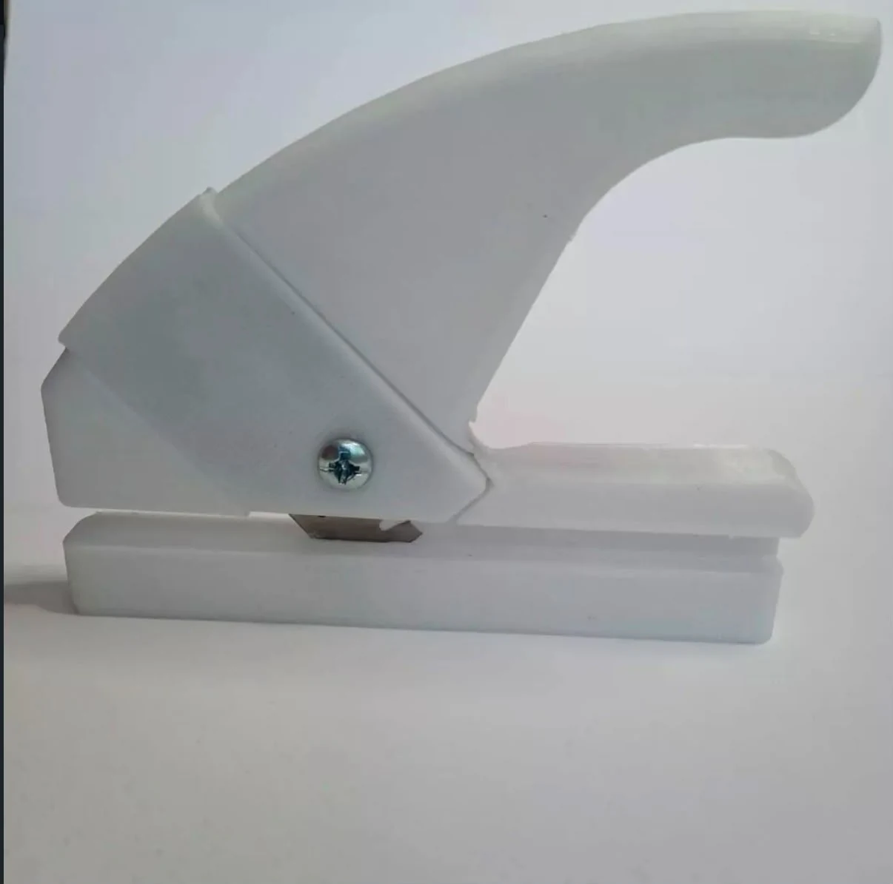
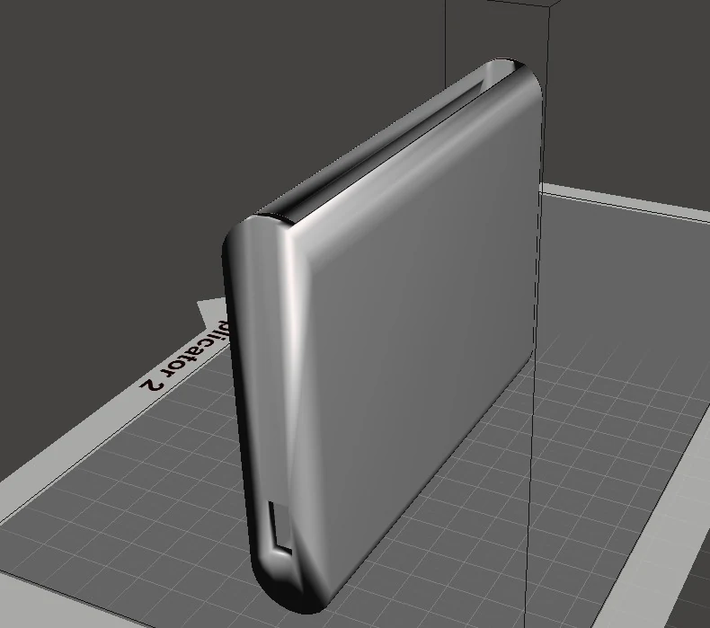
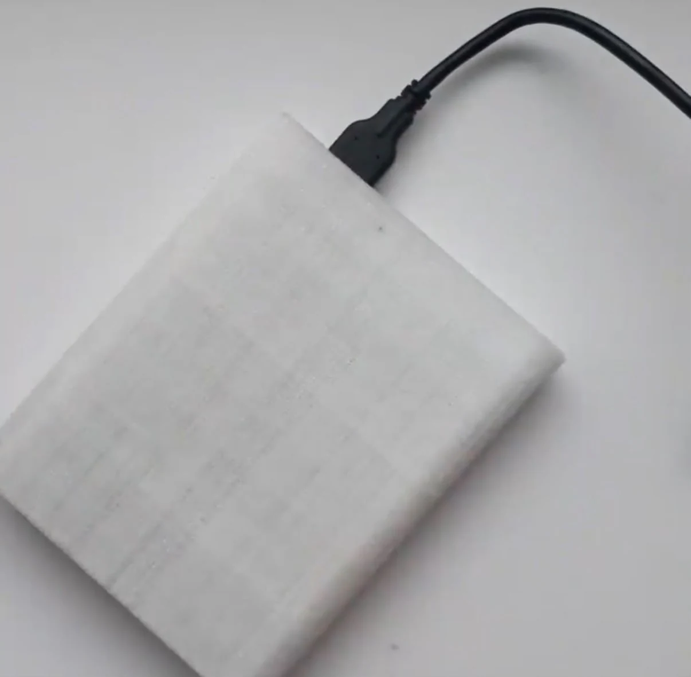
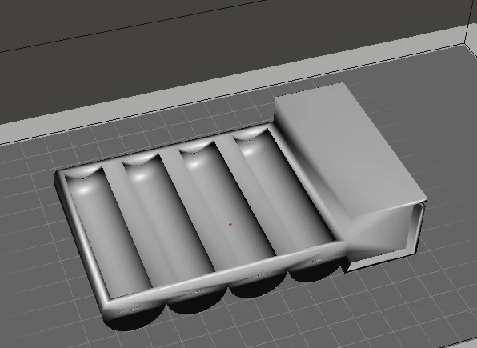
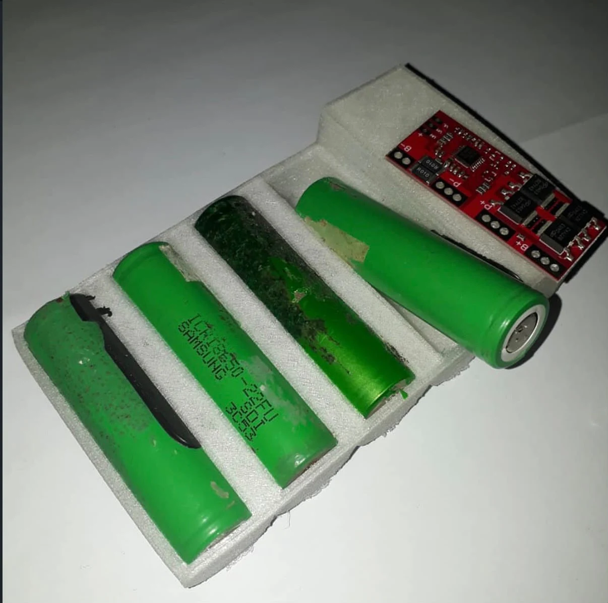
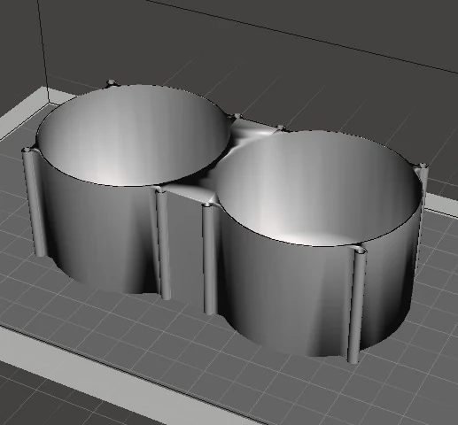
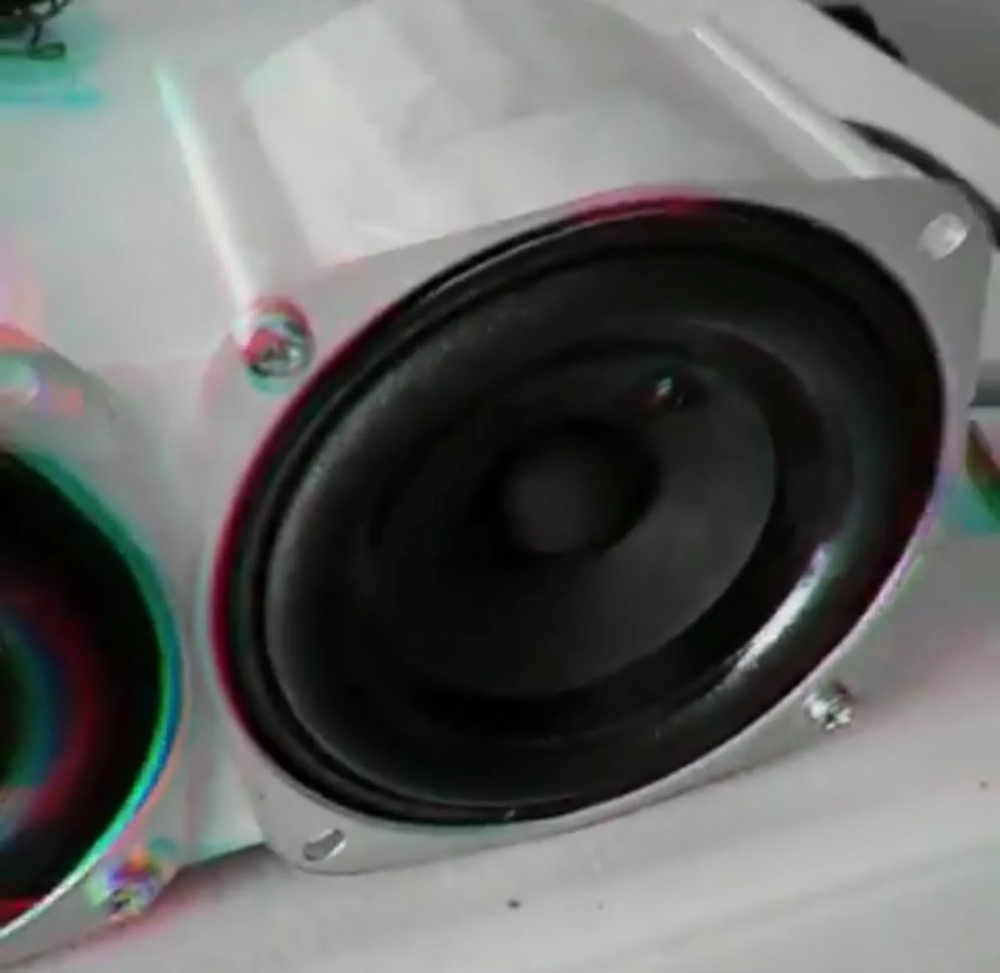
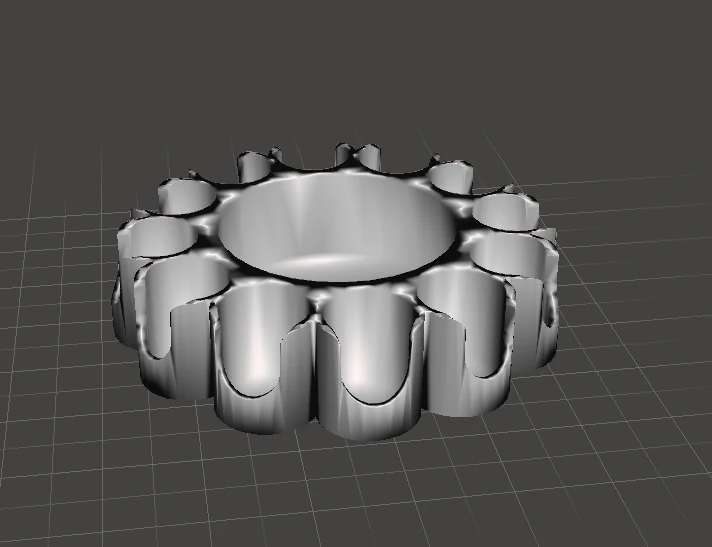
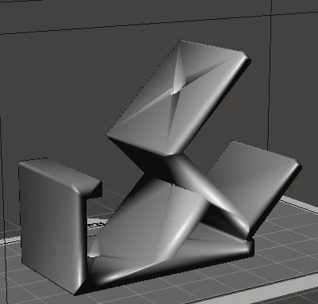
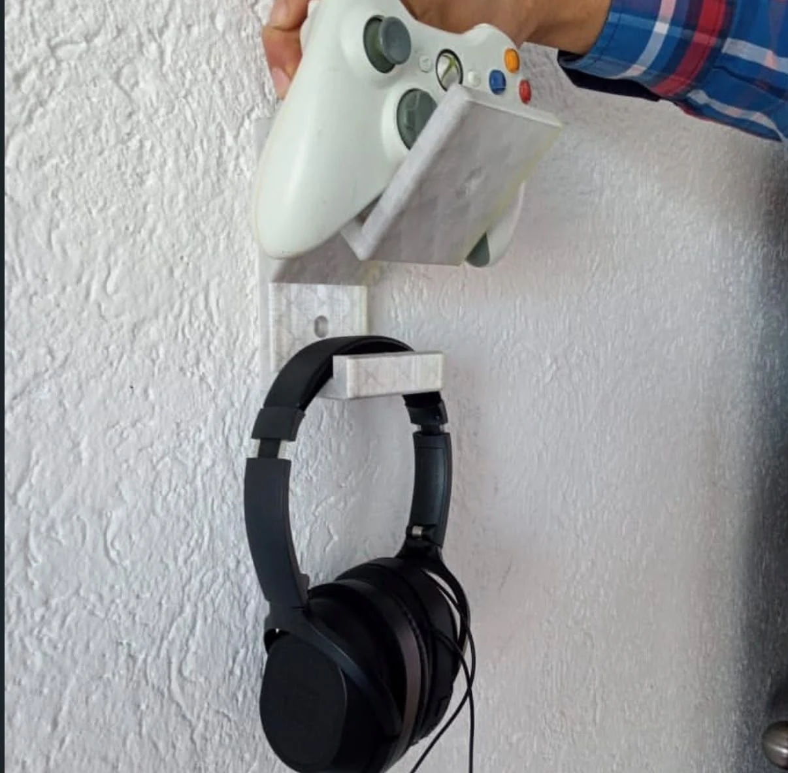
Rol
Modelado 3D y preparación de archivos STL a partir de especificaciones.
Herramienta principal
AutoCAD 3D.